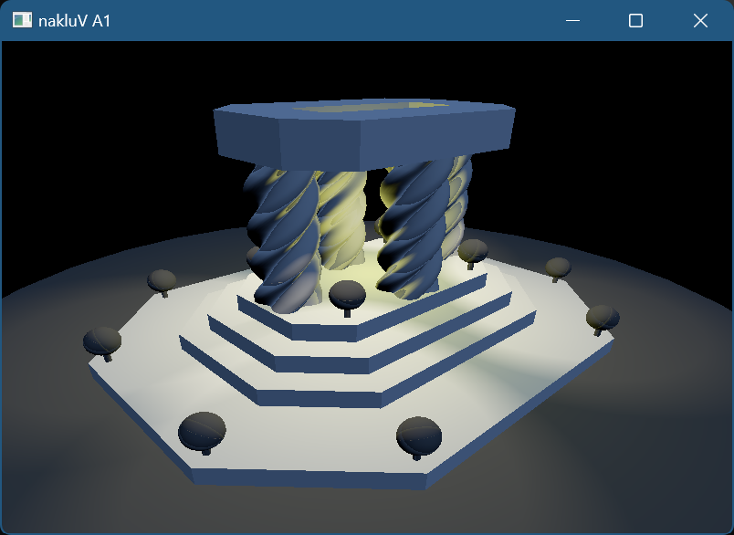

For this assignment I added lights to my scene, implementing sun, sphere, and spot lights. I was able to account for limit attenuation/falloff, horizon attenuation, and spot light blending. I also was able to account for tone mapping.
Describe the scene you lit, the light count and placement approach, and include a screen recording showing it running in real-time:
I made a cute little scene with the 3 types of lights. I also showed how their different attenuations shine though a tree, cat, and rat (the 3 essential elements of any scene or what I could find low poly versions for free online).
Credit + cite your sources for textures and models, if you did not create them yourself.
I added every attribute from the "LIGHT" directly to a struct in RTG.
I decided to leave Tint and power seperate becasue sometimes power is a function of the distance.
To pass Lighting information to the objects I repurposed World and made a struct Light.
In that struct I packaged everything into 4 vec4s as Tint + Strength or Power, Position of the light in world + Angle or Fov,
Radius + Limit + Blend + Type of Light, and the direction that light points. This packaging made all of the information align nicely as attributes in the vertex storage buffer.
I essentially passed in an array of Lights to the object.frag where I then looped throught the lights in the scene.
For each type of light I added the proper light energy * attenuation to the energy at that point.

I wasn't able to add shaws to my code :(
I really enjoyed this assignment becasue lights are fun. I wish I was able to fully implement lighting for pbr materlials and I really wanted to get to shadow maps, but again sometimes life gets in the way and time is limited.